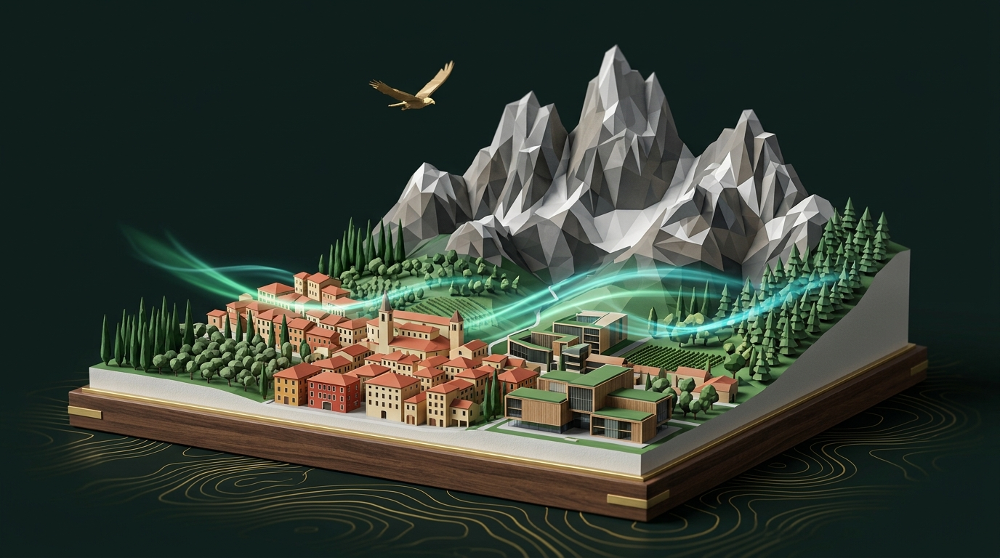
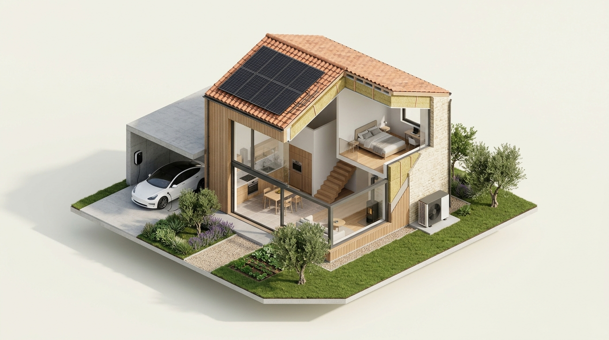

Il territorio non è una tabella. Respira.
Hackathon di Schio 2026 · "La mia sostenibilità": abbiamo trasformato i dati aperti di Aria, Suolo, Biodiversità ed Energia in un Gemello Digitale 3D vivo dei 114 Comuni vicentini e della singola abitazione.

Dati complessi. Scelte semplici.
I dati ambientali esistono già, ma sono chiusi in PDF tecnici. Li traduciamo in decisioni immediate per 3 attori:
Prima: PDF Stagnanti e Confini Ciechi
Un assessore legge tabelle annuali in µg/m³ divise per centralina, senza sapere quanto vale un nuovo parco urbano o una ciclabile sull'indice di Schio e della vallata.
Con Vicenza Sostenibile: Simulazione What-If in 3D
Il Comune testa gli interventi sulla mappa 3D senza sovrascrivere i dati storici, vedendo all'istante il salto di punteggio locale e il beneficio condiviso coi comuni confinanti.
Simulatore Territoriale su Schio.
Partiamo dal dato reale (83/100): attiva gli interventi sulla mappa o sulla tastiera per simulare il futuro.
Leve Politiche Comunali
L'aria non si ferma al confine comunale.
Ogni azione su Schio propaga il 50% del beneficio ai 6 Comuni confinanti dell'Alto Vicentino.
Schio
38.780 ab.Hub centrale · Riceve il 100% degli interventi locali.
Soglie Fauna Bio-Indicatrice 3D
Palco Casa 3D: dalla Classe E alla Classe A.
Configura le dotazioni domestiche in totale anonimato e scopri quale intervento rende di più.

Seleziona gli Impianti (Pesi 0–100)
Dati reali ARPAV. Pronto per tutta Italia.
Interpolazione spaziale IDW sui 114 Comuni e architettura White-Label replicabile a costo licenza zero.
Stazioni Ufficiali ARPAV 2025
Portabilità Nazionale White-Label
Basta cambiare il codice provincia ISTAT per rigenerare qualsiasi territorio italiano.
5 Sviluppatori. 6 Stream. Agenti AI in Parallelo.
Dal brainstorming al repository GitHub condiviso: sviluppo parallelo Dev 1 → Dev 6 con agenti AI e merge finale.
Alessandro Gottardelli
Ivan Granata
Leonardo Bellaro
Samuele Cella
Singh Navdeep
ARPAV 2025 & Confini ISTAT
Pipeline Python SHA-256, proiezione EPSG:32632 e interpolazione IDW.
Infrastrutture & 1.368 Case
Parchi, ciclabili, colonnine EV, industrie e abitazioni dimostrative.
Motore Puro & Spillover
Calcolo deterministico punteggi, classi A–G e propagazione 50%.
Store Zustand & MapLibre
Cartografia 3D provinciale, ritaglio edifici e coordinamento merge.
Fauna glTF & Build Mode
Depth buffer condiviso Three.js, alberi instanziati e animali 3D.
Palco Casa & Interfaccia
Spaccato domestico drag & drop, simulatori e classifica privacy.